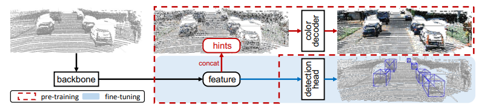
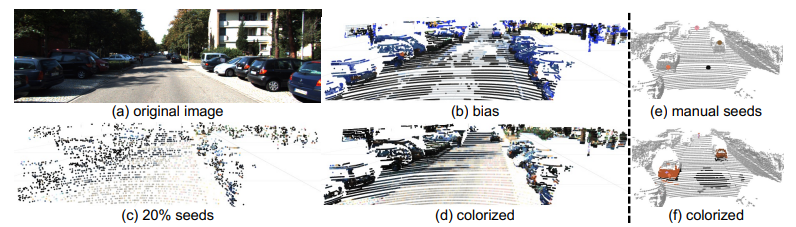
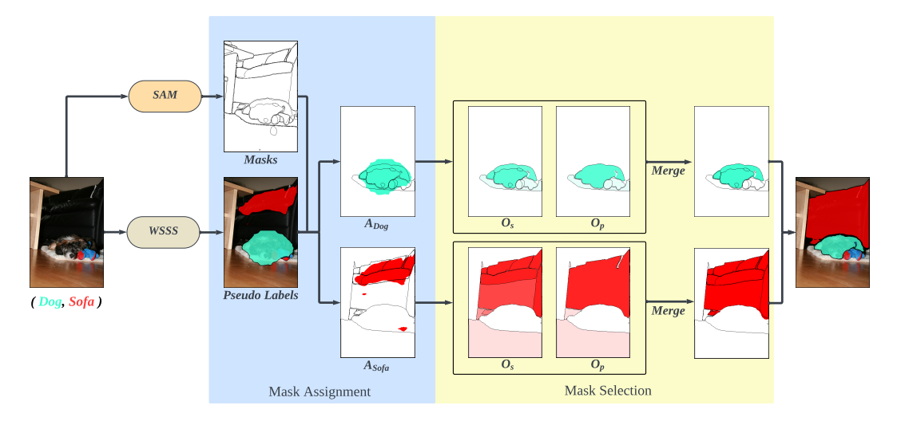
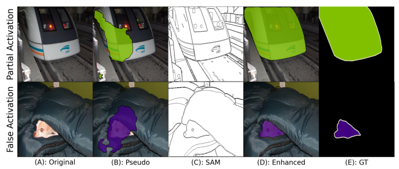
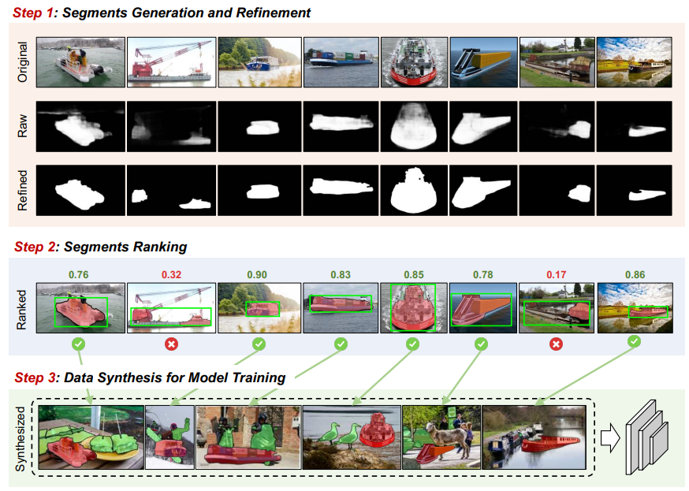

Tianle Chen
I'm a first year PhD student in the Image and Video Computing group at Boston Univerisity, where I am fortunate to be advised by Prof. Deepti Ghadiyaram.
Prior to joining BU, I completed my undergraduate study at The Ohio State University.
Email /
CV /
Scholar /
Research
I'm interested in computer vision, especially in image and video processing.
Your browser does not support the video tag.


Pre-Training LiDAR-Based 3D Object Detectors Through Colorization
Tai-Yu Pan ,
Chenyang Ma ,
Tianle Chen* ,
Cheng Perng Phoo ,
Katie Z Luo ,
Yurong You ,
Mark Campbell ,
Kilian Q Weinberger ,
Bharath Hariharan ,
Wei-Lun Chao
ICLR , 2024
arXiv
Your browser does not support the video tag.


Segment anything model (sam) enhanced pseudo labels for weakly supervised semantic segmentation
Tianle Chen* ,
Zheda Mai* ,
Ruiwen Li ,
Wei-Lun Chao ,
NeruIPS Workshop , 2023
project page
/
arXiv
Your browser does not support the video tag.

Learning with free object segments for long-tailed instance segmentation
Cheng Zhang ,
Tai-Yu Pan ,
Tianle Chen* ,
Jike Zhong ,
Wenjin Fu ,
Wei-Lun Chao ,
ECCV , 2022
Paper
{kind=link}